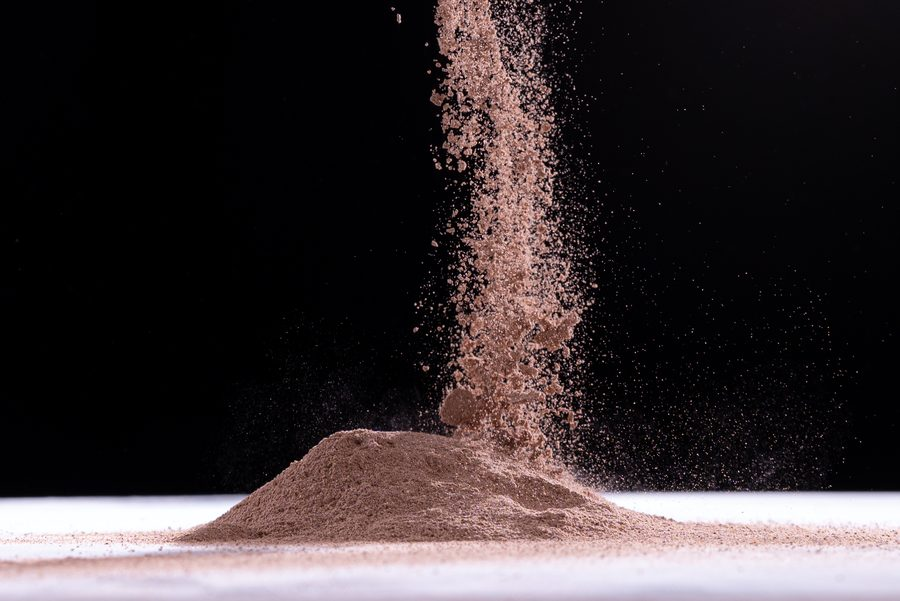
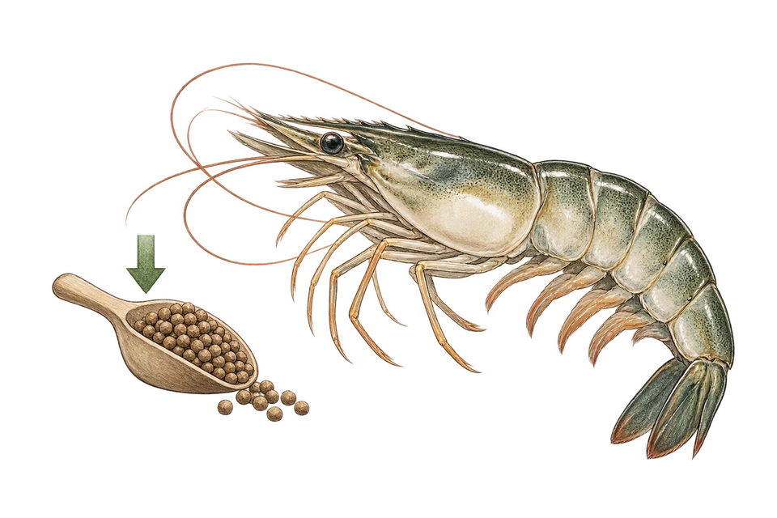
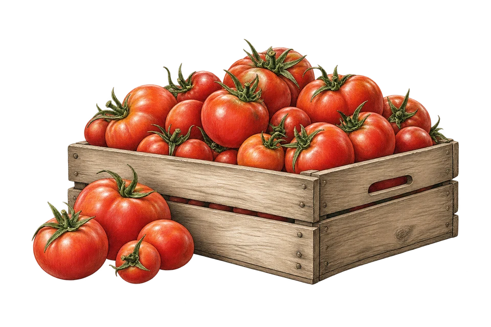
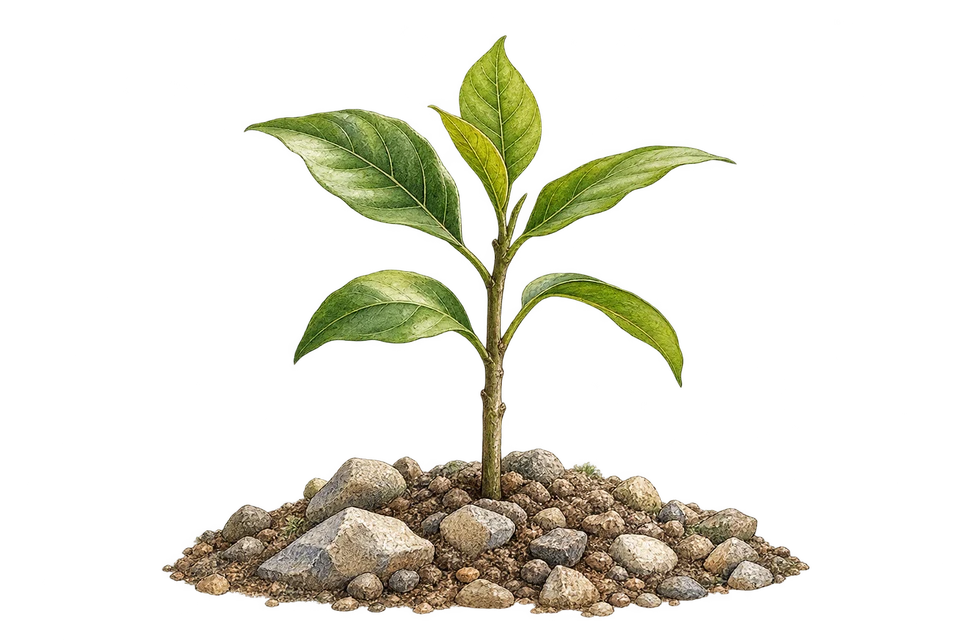
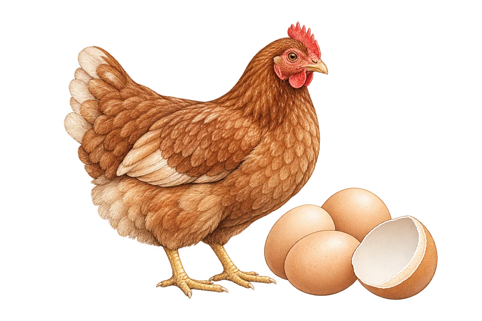

Natural Guano Phosphate from Indonesia
A natural phosphorus source from Indonesian guano deposits, used as a raw material for SP-36 and NPK fertilizers or applied directly on acidic soils. Available as powder and granule, packed for domestic and export shipment.
- Powder60–325 mesh
- Granule2–5 mm

Natural Phosphate (Guano Phosphate) supplier in East Java, Indonesia
Our natural phosphate is a phosphorus (P) source from Indonesian guano deposits. Fertilizer producers use it as an alternative to imported phosphate rock when making SP-36 and NPK fertilizers, and growers apply it directly on acidic and peat soils, where natural phosphate dissolves more readily.
Phosphorus drives root growth and supports uniform flowering and fruiting. Because natural phosphate releases its nutrients gradually, it keeps working over several seasons. It is also used as a phosphorus and calcium source in animal feed and as a feedstock for the chemical industry.
guano phosphate · natural rock phosphate · phosphate fertilizer raw material · organic phosphate
Specifications
| Forms & sizes | |
|---|---|
| Powder | 60–325 mesh |
| Granule | 2–5 mm |
| Custom sizes | Outside 60–325 mesh on request |
| Typical analysis | |
| P₂O₅ & full analysis | COA shared on request for the current batch |
| Trade details | |
| Packaging | 25 kg bag · 50 kg bag · Jumbo bag |
| Origin | East Java, Indonesia |
| HS code (indicative) | 2510.20Natural calcium phosphates, ground (guano-based grades may be classified under 3101.00) |
| Incoterms | Open to discussion |
| MOQ & capacity | Ask via WhatsApp or email |
HS codes are indicative 6-digit codes; final classification is confirmed for each shipment with the destination's customs requirements.
Why buyers choose our Natural Phosphate
Strong, Wide Roots
Phosphorus (P) drives root growth so plants stand firmer and take up more nutrients.
Uniform Flowering & Fruiting
Supports flower, fruit, and seed formation — for a bigger harvest.
Slow Release, Fewer Applications
Nutrients release gradually with a residual effect lasting several seasons.
Effective on Acidic & Peat Soils
The more acidic the soil, the more readily rock phosphate dissolves for plants.
Animal Feed Mineral
P & Ca for strong bones, optimal growth, and thicker eggshells.
Chemical Industry Feedstock
Processed into phosphoric acid and phosphate compounds for many industries.
How Natural Phosphate works in each sector
What the product does, and the result buyers get, sector by sector.
-

Fisheries & AquacultureFertilizes water to grow phytoplankton
Stable water color & plenty of natural feed — more efficient feed use (FCR)
-

Agriculture & PlantationsSupplies phosphorus gradually (slow release)
Strong roots, uniform flowering & fruiting, higher yields
-

Mining & ReclamationSupplies phosphorus for revegetation seedling roots
Seedlings root quickly and survive on degraded land
-

Animal Feed & ChemicalsPhosphorus & calcium source in feed rations
Strong bones, optimal growth, thicker eggshells
Natural Phosphate: buyer questions
Can't find your answer? Our team replies within 1×24 business hours.
What is guano phosphate used for?
Which forms are available?
Can I get a certificate of analysis?
How is it packed and shipped?
What is the minimum order quantity?
Other natural minerals we supply
Need Natural Phosphate for your next shipment?
Tell us the grade, packaging, quantity and destination. We reply within 1×24 business hours.